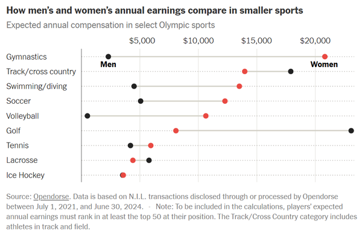

COLLEGE PARK, Md. — Name, Image and Likeness (NIL) partnerships are becoming a major force across college athletics, and in College Park, local businesses are finding new ways to reach students by teaming up with Maryland athletes instead of relying on traditional advertising.
For players, NIL deals offer something they haven’t had before: a way to earn money while juggling the demands of a Division I schedule.
“As a college athlete, you don't necessarily have the time — especially for baseball, because everyone has to play summer ball,” Maryland baseball player Quinn Yellen said. “You don’t even have the chance to get a summer job. It’s really hard to make money as a college student. So having NIL is an opportunity… you have to go and seek out the opportunities, and you have to do things with them. It's not like you just get paid money for existing.”
Below are the two logos of local businesses illustrating NIL partnerships in College Park. Click either image to enlarge it!
Sydney Koretsky, Director of Marketing and Community Relations for the company behind Bagels ‘n Grinds and Potomac Pizza, said the partnerships have already proven valuable.
“I think one of the most positive aspects is our ability to further engage with the community,” Koretsky said. “It’s been great to have younger people out on the ground, almost grassroots campaigning for us.”
Local restaurants, including Bagels ‘n Grinds and Potomac Pizza, say NIL deals help them create more personal and relatable connections with students compared to standard marketing.
Koretsky said the authenticity of athlete partnerships is what makes the huge difference in their partnerships compared to those with larger businesses, such as Under Armor or Celsius. Many data charts from NIL programs for athletes show that in recent years many men's and women's sport's alike have grown in monetary value and income of their NIL deals. Please take a look at this graph from OpenDorse as an example.
Here is a simple visualization representing hypothetical NIL growth nationwide.
Click below to explore how NIL impacts athletes, businesses, and the College Park community.